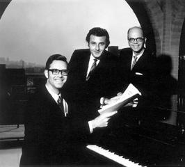

Arno Drucker, pianist
About Arno
Most of my life has been involved in music. My university studies were at the Eastman School of Music in Rochester, N.Y. for a Bachelor and Master of Music degree and later at the Peabody Conservatory of Music in Baltimore, MD for a Doctor of Musical Arts degree, where I studied with Leon Fleisher.
In between there were years abroad - first in Austria on joint Fulbright grants with my wife Ruth and next in Germany as soloist and pianist with the Seventh Army Symphony Orchestra based in Stuttgart. The orchestra's mission involved playing lots of concerts, about 100 a year, so we traveled around Germany a lot and I performed at the World's Fair in Brussels as well as concerts in Holland and Luxembourg.
By the time of my first university teaching position at West Virginia University in Morgantown, WV, I guess the love of travel had begun. I joined two friends, violinist Donald Portnoy and cellist Jon Engberg, and we formed the American Arts Trio. As a trio we represented West Virginia at the World's Fair in Seattle, played concert tours of Germany and Mexico and performed twice at Carnegie Hall.
Our two sons were born in Morgantown, WV, where we stayed until my doctoral studies brought the family to Baltimore. I taught at Essex Community College, at the Peabody Conservatory, and was the Baltimore Symphony Orchestra Principal Pianist for over 20 years. My book "American Piano Trios: A Resource Guide" was published by Scarecrow Press in April, 1999.
My interests besides music are computers (I'm active in the Maryland Apple Corps), having watched my younger son start out on an Apple II when they first were made, and travel. David (older son) has his own web page, while Steven works for Microsoft.
American Arts Trio
Donald Portnoy, violin,
Jon Engberg, ‘cello
Arno Drucker, piano
Leon Fleisher and Arno Drucker in 2003
Leon Fleisher and Arno Drucker in 2009
